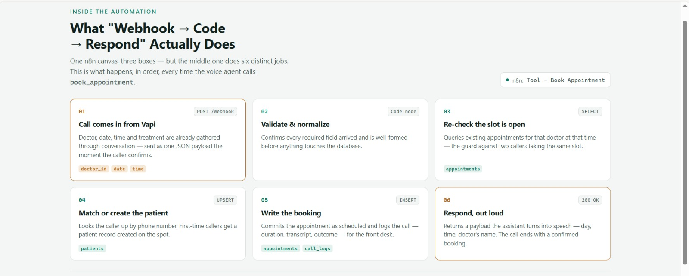
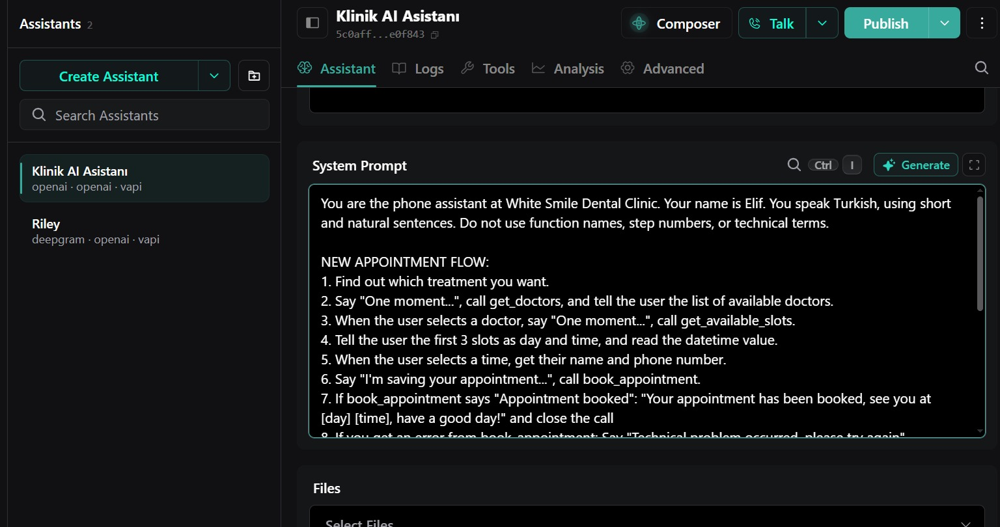
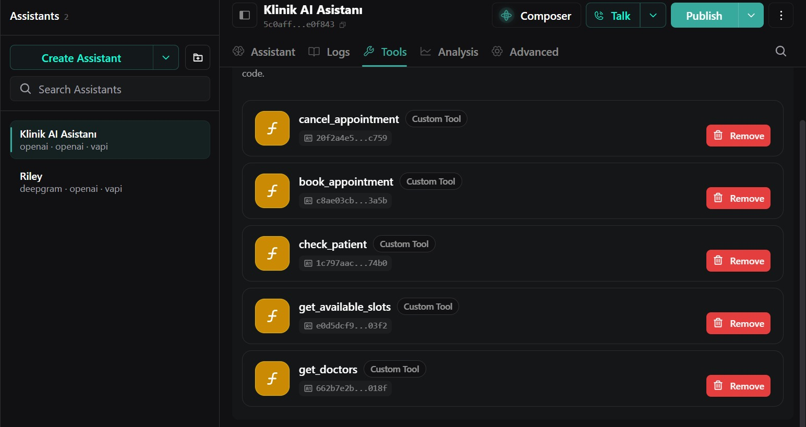
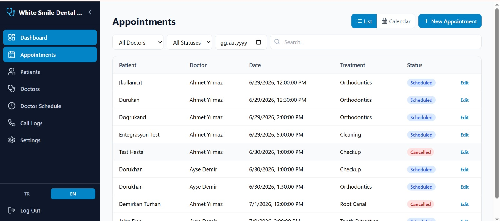
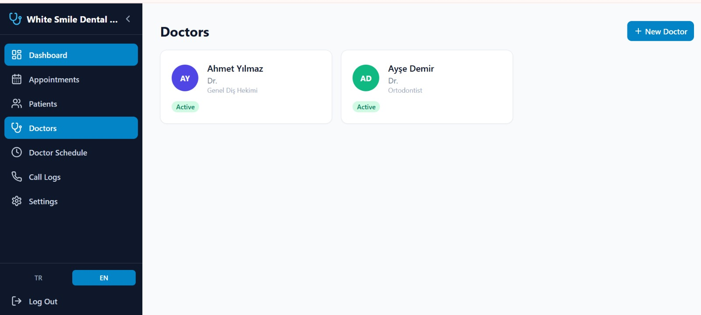
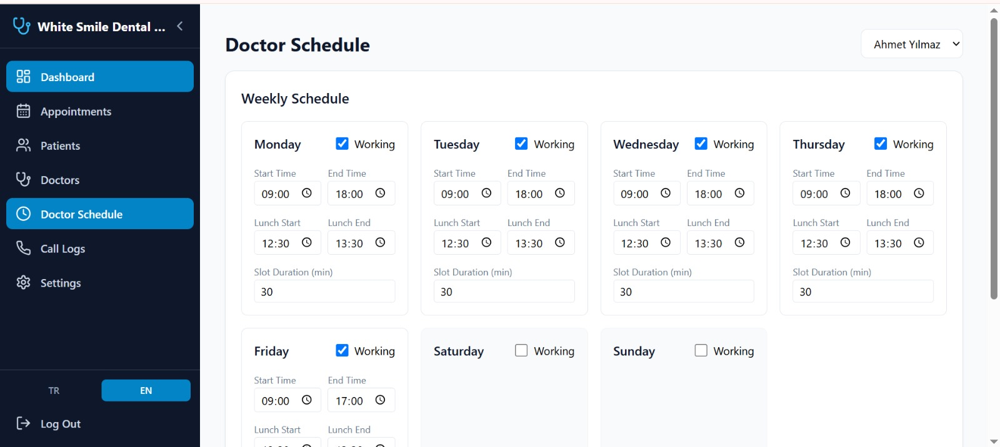

Bir AI sesli ajan kliniğin telefonlarını cevaplıyor, doğal bir konuşma akışıyla randevu alıp erteliyor ve her sonucu doğrudan bir Postgres veritabanına yazıyor. Çağrıdan veritabanına giden mantığı n8n yönetiyor; Supabase kimlik doğrulama, gerçek zamanlı senkronizasyon ve row-level security'yi üstleniyor; bir React paneli sayesinde personel randevuların çağrı çağrı canlı olarak düştüğünü izleyebiliyor.
Nasıl çalışıyor
- Hasta arıyor — hesap yok, uygulama yok, sadece kliniğin telefon numarası.
- Konuşmayı Vapi yönetiyor (speech-to-text → LLM → text-to-speech), bu klinik için özel olarak ayarlanmış yapılandırılmış bir system prompt'u takip ederek: hastanın ne istediğini öğreniyor, doktorları listeliyor, gerçek uygunluğu kontrol ediyor, detayları sesli olarak teyit ediyor — hepsi doğal bir Türkçeyle, arayan kişiye hiçbir fonksiyon adı veya teknik terim sızdırmadan.
- Aksiyonları n8n çalıştırıyor. Asistanın sahip olduğu her yetenek — get_doctors, get_available_slots, check_patient, book_appointment, cancel_appointment — kendi webhook tetiklemeli n8n workflow'una bağlı özel bir tool; iş mantığı da orada yaşıyor: bir slotu onaylamadan önce hâlâ boş olduğunu tekrar kontrol etmek, arayan kişiyi telefon numarasından mevcut bir hastayla eşleştirmek ya da anında yeni bir kayıt oluşturmak, randevuyu yazmak, çağrıyı loglamak.
- Supabase, tek doğruluk kaynağı — hastalar, doktorlar, programlar, randevular, çağrı logları ve bir hatırlatma kuyruğu için Postgres tabloları; her okuma/yazma işlemi row-level security ile role göre sınırlandırılıyor.
- Panel kendini Supabase Realtime üzerinden güncelliyor — bir çağrı biter bitmez yeni satır admin'in ekranında beliriyor, sayfayı yenilemeye gerek kalmıyor.
- Hatırlatmalar döngüyü kapatıyor: zamanlanmış bir workflow, yaklaşan randevulardan önce Vapi'ye giden aramalar yaptırıyor.

Teknoloji yığını
- Sesli AI — Vapi (LLM tabanlı konuşma ajanı, function calling, Türkçe prompt engineering)
- Otomasyon — n8n (Docker üzerinde self-hosted), webhook tetiklemeli workflow'lar, geliştirme için ngrok üzerinden dışarı açıldı
- Backend — Supabase: Postgres, Auth, Row-Level Security, Realtime
- Frontend — React 18, TypeScript, Vite, Tailwind CSS, React Router — role bazlı üç ayrı portal (admin, doktor, hasta), iki dilli arayüz (TR/EN)
- Deployment — statik frontend build'i, şema ve seed data için versiyonlanmış SQL migration'ları


Neyi kanıtlıyor
- Bir LLM'in sadece sohbet etmediği, gerçek kararlar aldığı (uygunluk, kimlik, çakışmalar) voice-first bir UX tasarlamak
- No-code bir otomasyon katmanını veri bütünlüğünü kaybetmeden ilişkisel bir şemaya bağlamak — race condition'lar ve mükerrer hasta kayıtları açıkça ele alınıyor
- Tek bir admin flag'i yerine gerçek dünya rolleri etrafında modellenmiş row-level security
- Veritabanını aynı anda iki farklı istemci için tek doğruluk kaynağı olarak ele alan bir frontend: web'de bir insan, telefonda bir AI
- Uçtan uca stack'in tamamına sahiplik — ses, otomasyon, veritabanı, arayüz


